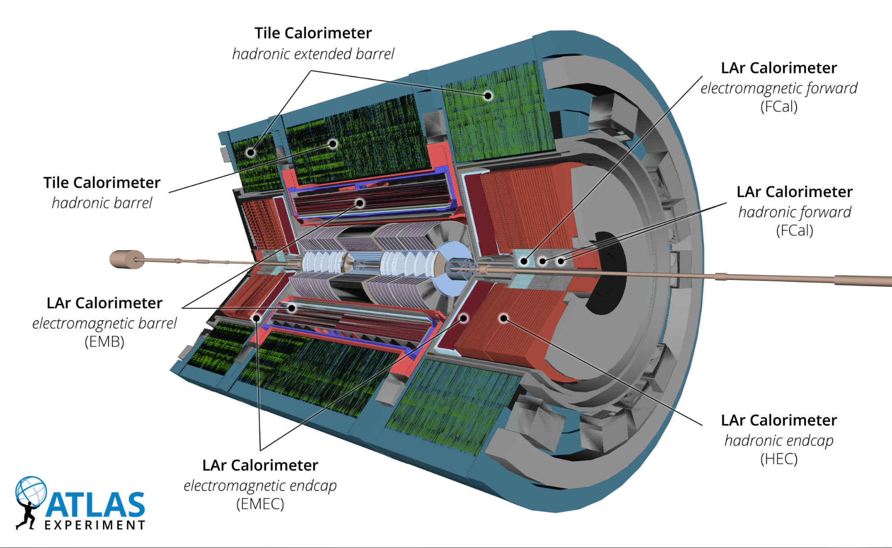

Official ATLAS calorimeter cutaway, Figure 5 of the Run 3 detector paper.

Longitudinal R–z schematic of one end-cap, adapted from the 2008 ATLAS detector paper; not to scale.

Official ATLAS calorimeter cutaway, Figure 5 of the Run 3 detector paper.
Longitudinal R–z schematic of one end-cap, adapted from the 2008 ATLAS detector paper; not to scale.
ATLAS Collaboration, JINST 19 (2024) P05063, Fig. 5 · ATLAS Experiment © CERN. Official image. R–z schematic adapted from JINST 3 (2008) S08003, Fig. 5.19.